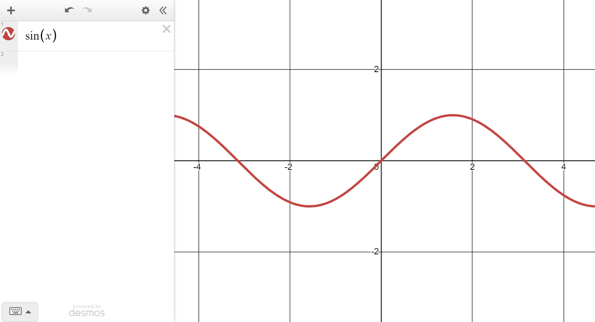

Domain Transformations
This article is part of Graphics From Scratch, a series of articles on computer graphics. Start from the beginning if you want to know what's going on.
Here's the graph of a sine function:

Now, how do you think the graph would change if we multiplied x
by some number a before feeding it to the sine function?
Conveniently, Desmos provides us with sliders for adjusting variables and
seeing how the graph reacts in real time.
Cool, so scaling the input scales the graph horizontally. Note how the larger the input scale, the smaller (more squashed) the graph gets in the horizontal direction.
What about adding some offset b to the input?
Shift in opposite direction
As we saw in the previous article, that a texture sampler is a function that takes in a point and returns the interpolated color of a texture at that point.